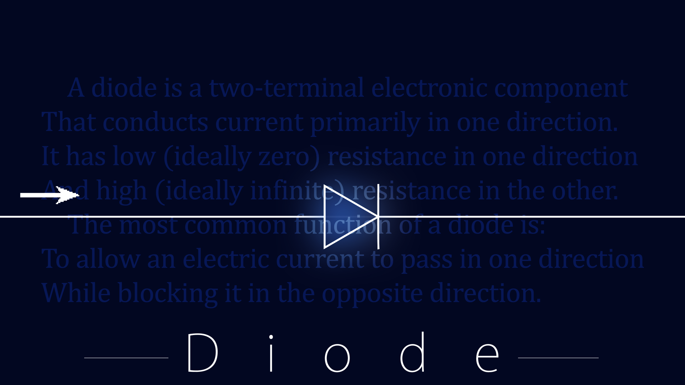
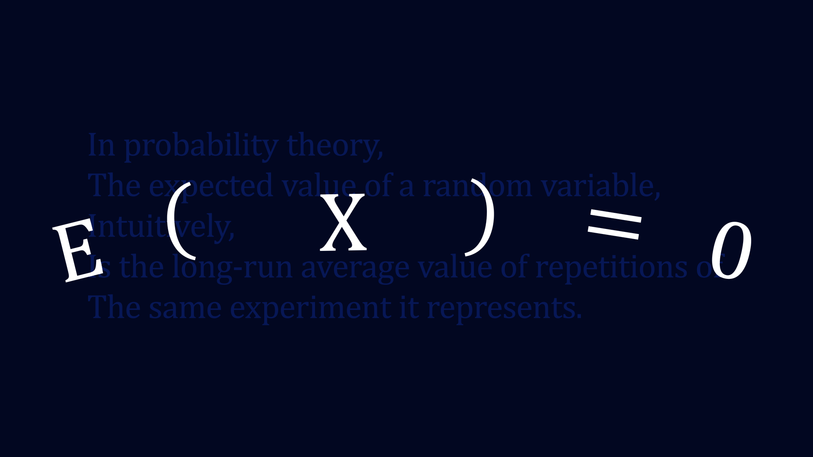
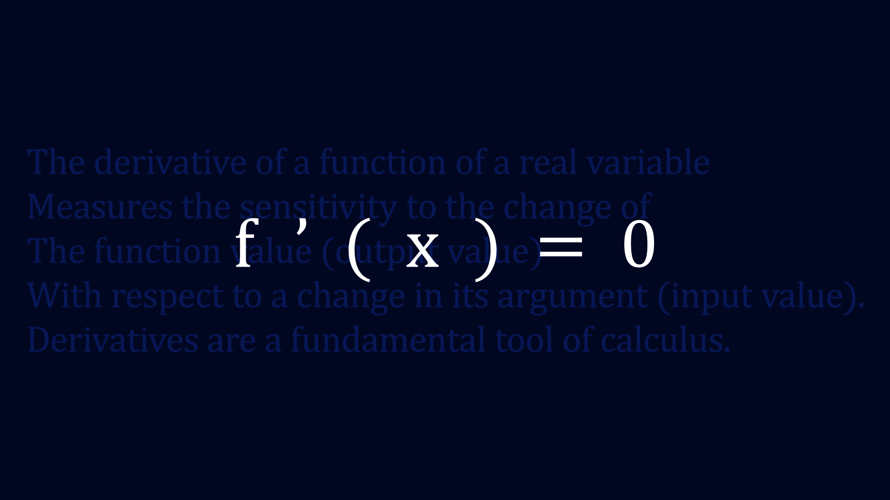

Settings | 设定集
The following settings are listed by time.
All The Time
私(わたし) | 我

The ME.
The ME is actually a symbol of the spiritual carrier of mine.Also,it carries all the feelings and thoughts of mine,as is mentioned in the poem.
What she had experienced just see The Origin.
The Seventh | 七分刻

It's strange.The clock was divided into seven parts....So do our lives?
Part 1
The Eye of Abyss | 深渊之眼

〃Wer mit Ungeheuern kämpft, mag zusehn, dass er nicht dabei zum Ungeheuer wird. Und wenn du lange in einen Abgrund blickst, blickt der Abgrund auch in dich hinein.〃——Friedrich Wilhelm Nietzsche
Part 2
Diode | 二极管
The first thing I came up with "Check Valve".
It is well known that through a Diode electron flow can only pass in one direction,that is a symbol of a Check.
Expected Valve | 期望值
E(X)=0 stands for Having no expectation of Life,which is the usual symptom of the Depression(a kind of mental illness).
They just wait to die.
Derivative Function | 导数
f'(X)=0 stands for A Great Peace towards life,being cold blooded towards everything
They only care about themselves,or Not.
The Cross | 叉

〃You shall not pass.〃
Everything they do are just simply regarded wrong,or in their minds they themselves are doing everything wrong.
The symptom of Delusionofsin.